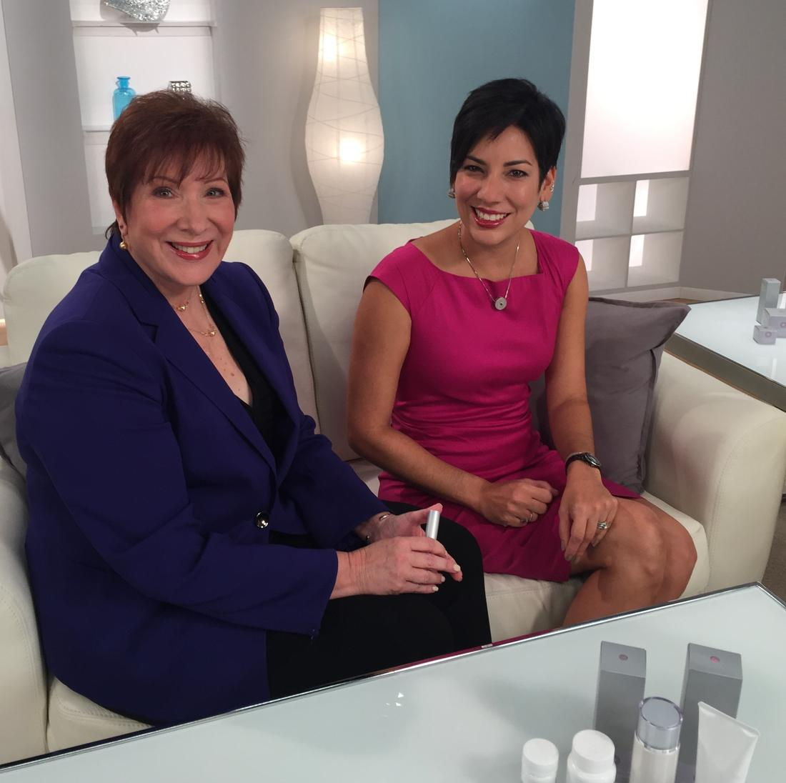
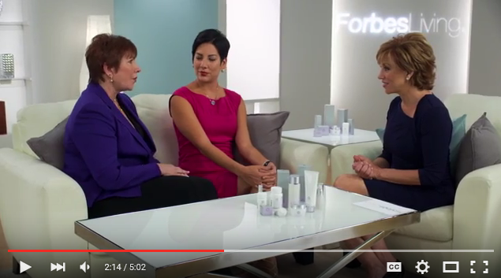

BeBe & Bella Makes YOU look Glam!


Power Among Sisters – I love Linda and Allison Krebs energy and passion – and they even had mom on the set.
Probiotic Skincare Benefits |BeBe & Bella.com
As soon as you begin using BeBella, you’ll notice a change. Fine lines and wrinkles will begin to soften, dry skin will become deeply hydrated, inflammation and redness will appear diminished, and age spots will start to fade. Besides improving the look and feel of your skin, BeBella also boosts its natural defenses against environmental damage, one of the leading causes of premature aging. We based the BeBella regimen on the Japanese “layering method” of skincare. Japanese skincare often involves several steps – cleansing, toning, serum application, moisturizer and eye cream application. This is how BeBella is meant to be used. Though each product works on its own, they’re meant to be layered for maximum benefit. One product simply can’t do it all.
What sets BeBella Apart?
BeBella’s skincare secret is in its two patented anti-aging ingredients: Probiotic + Fissione Yeast Propagate Technology. Fissione is a skin-friendly yeast complex that encourages faster cell turnover, enhances the skin’s protective moisture barrier, and fights off free radicals. Lactobacillus casei Propagate Technology is a topical probiotic amino acid polypeptide that hydrates, exfoliates, and evens skin tone.Through extensive research and testing, our scientific team has developed a proprietary formula that combines these powerful ingredients for maximum anti-aging effects.
Beauty From the Inside Out
When it comes to your skin, what you put in your body matters as much as what you put on it. That’s why BeBella includes an oral probiotic supplement as part of our anti-aging regimen. Most people know that probiotics are good for your digestive health, but new research is finding that “friendly bacteria” may be beneficial to the skin as well. BeBella’s probiotic supplements work from the inside to calm inflammation, prevent breakouts, and speed up cell turnover.
“I am obsessed…with BeBella”
Lynne Sparks, AttorneyAtlantaCommitment to Purity
BeBella is committed to creating skin care products that contain minimal preservatives, additives, and fragrance. Our products are derived from natural ingredients that are good for the skin and the environment. Every BeBella product is hypoallergenic and appropriate for all skin types and colors.
Active Ingredients
Fission Yeast Extract
Extracts from fission yeast called Schizosaccharomyces pombe (S. pombe) were studied for their effects on skin regeneration. S. pombe was first discovered in 1893 as one of the brewing yeast species used in millet beer fermentation in East Africa. Since then, S. pombe continues to be used in the brewing industry around the world, as well as a model organism in cell biology research for its unique cell replication characteristics.
The extract from S. pombe cultures contains 20 nutrients that are beneficial to the skin, including the essential eight (8) amino acids the skin needs to rejuvenate itself. Clinical studies have found that the fission yeast extract, when used twice daily, conditions keratinocytes (skin cells) by improving skin’s barrier function, which retains moisture in the skin, and keeping skin cell turnover normal, slowing the aging process, ultimately resulting in the reduction of fine lines and wrinkles.
Probiotic Ferment Skin Care Technology
Our bodies are made of some 60 trillion cells; however, more than ten times that number of microorganisms live on our skin as well as inside our intestines and other mucous membranes. These microorganisms are called resident microbes and have major effects on health and function of the body. Some resident microbes are “friendly” and work to the benefit of the body. This gave rise to the concept of “probiotics” in the 1990s, which stresses the importance of balancing the bacteria living in our gut, or microbiome.
A pharmaceutical company affiliated with BeBe & Bella, which specializes in the production of probiotics, discovered a novel activity of their new probiotic product containing Lactobacillus casei (L. casei) as a cosmetic material. An extract from the L. caseiwas found to improve skin condition by reducing the amount of moisture loss and stimulating cellular turnover. These results suggest that the L. casei ferment stimulates skin barrier function and promotes normal thickening of the skin.
L. casei is a member of the lactic acid bacteria group that produces lactic acid as the final product of the fermentation of lactose. Lactic acid bacteria have been used in the food industry for many years, including in the manufacture of yogurts, cheeses, and fermented vegetable and fruit products. Famous species used in yogurts are Lactobacillus acidophilus and Lactobacillusbulgaricus, to name a couple. The beneficial probiotic activity differs not only between the various species of the bacteria, but also between the various strains within a species. Our patented L.casei is superior to other strains in its ability to 1) survive gastric acids 2) adhere to the mucosal membranes of the gastrointestinal tract and 3) proliferates or colonize quickly. Ultimately, our L.caseiis providing a protective shield both on the skin and in the gut that competes with and wins against bad bacteria.